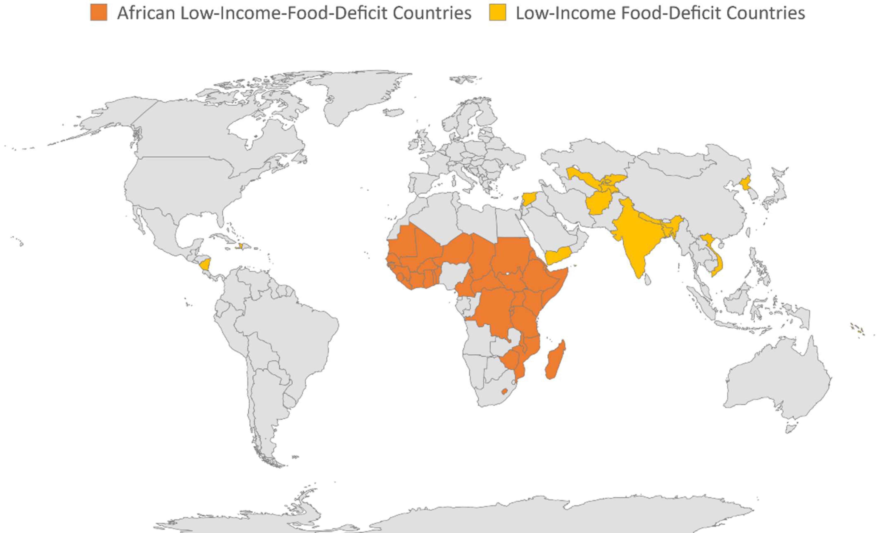
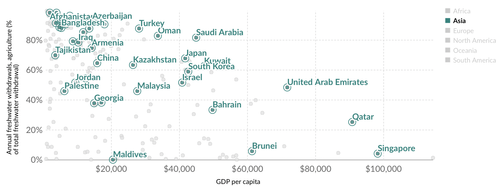
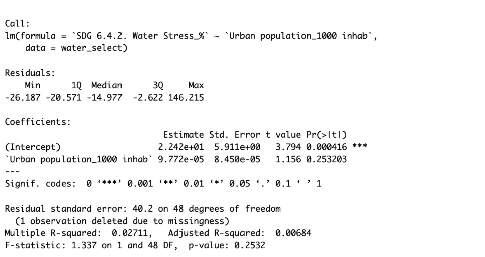
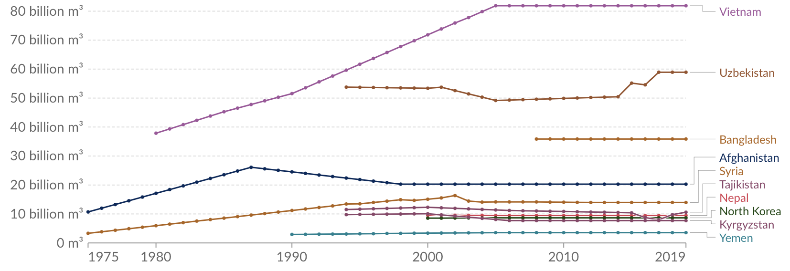
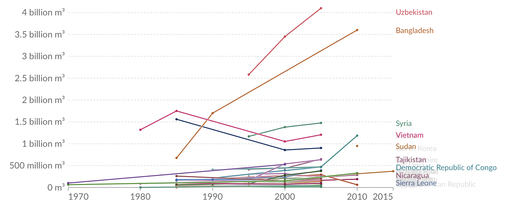

Water is the worlds most valuable resource and climate change will likely exacerbate water stress world wide. Water stress will further affect the most vulnerable countries. Vulnerable countries are already facing water shortages, poor water management, privatized water management, etc. Water stressors include demands from agriculture, natural disasters, industrial use , and municipal use. Water stress occurs when demand for safe, usable water in a given area exceeds the supply. I thought a good measure of vulnerability would be to study water stressors in Low income food deficit countries(LIFDCs) given that vulnerable countries often face issues of poverty and food scarcity that are often linked to water vulnerability.
As global population grows (increasing agricultural, industrial and domestic demands for water), and water demand increases, water stress and the risk of water scarcity is now a common concern. This is even more applicable for particular regions with lower water resources and/or larger population pressures.
In this study I chose to focus on the most vulnerable areas for certain reasons
a. challenge myself with missing data
b. stray away from Eurocentric studies that focus on Western development
c. Highlight countries of need
Goal
My overall question is: What are the biggest stressors of water resources for “low income food deficit countries?” Understanding what the water stressors are in each country

Low Income Food Deficit Countries
AQUASTAT Data
About the Data
The AQUASTAT Dataset is the Food and Agriculure Orgnaization of the United Nations global information system on water resources and agriculture water management. It collects, analyses and provides free access to over 180 variables and indicators by country from 1960. AQUASTAT draws on national capacities and expertise with an emphasis on Africa, the Near East, countries of the former Soviet Union, Asia, and Latin America and the Caribbean. AQUASTAT plays a key role in the monitoring of the Sustainable Development Goal 6 that sets out to “ensure availability and sustainable management of water and sanitation for all”, and in particular indicators of target 6.4 on water stress and water use efficiency.
FAO’s global Information System on Water and Agriculture can a new online platform that is The visit the AQUASTAT platform, you can visit: AQUASTAT.
Analysis Plan
Clean Data for Variables of Interest
Exploratory Data Analysis
Visualize Urban population of each country by Continent 3 most important water withdrawals
Irrigation
Industrial
Municipal
Linear Model Relationship between Water Stress and Urban Population Relationship between Cultivated area (arable land + permanent crops)
Time Series Data Annual freshwater withdrawals, 2019
Variables of Interest:
{r, eval=F, echo=T} will include the R source code in the output file while it is not evaluated
water <-read_csv("data/AQUASTAT_Dissemination_System.csv")kable(water[1:5,], caption ="Water Dataset ")
Data Cleaning
Althought the AQUASTAT dataset was very detailed, cleaning the data resulted in a challenge. Downloading the dataset from the online platform made, resulted in a dataset with a Country, Variable, and Unit column. Below is the data cleaning process. Essentially, I
# ---Add a new column "Continent" to water1 that corresponds to Country---water1 <- water1 %>%mutate(Continent =countrycode(sourcevar = Country, origin ="country.name", destination ="continent")) %>% dplyr::rename(Urban_population =`Urban population_1000 inhab`)water1
Exploratory Data Analysis
I found that the countries that are labeld LIFDCs belong to 3 continents: Asia, Africa, and the Americas with the majority in the African Continent. Below are the countries and the relative Urban Population to each country by continent.
Water stress is defined based on the ratio of freshwater withdrawals to renewable freshwater resources. Water stress does not insinuate that a country has water shortages, but does give an indication of how close it maybe be to exceeding a water basin’s renewable resources. If water withdrawals exceed available resources (i.e. greater than 100 percent) then a country is either extracting beyond the rate at which aquifers can be replenished, or has very high levels of desalinisation water generation (the conversion of seawater to freshwater using osmosis processes). Water stress categories are based on this percentage (% of withdrawals to renewable resources) as follows:
Before Running the linear regression model, I plotted the agricultural water withdrawal versus GDP per capital. I figured that GDP is could be an indicator of urbanization.
 This premilniary plot shows that opposite of my prediction–that increased GDP would increase agricultural water withdrawal. Overall, we see a negative correlation: agriculture’s share of total water withdrawals tend to decrease at higher incomes.
The Asian LIFD countries in the plot(clustered around the upper left of the plot) used more water for agriculture.
Analysis - Linear Regression
Relationship Between Urban Population and Water Stress in Asia
For this analysis I ran a linear regression to see if there was some relationship between urban population and water stress. From previous knowledge, we can expect the highter the urban population, the more water stress we can expect. An increase in urban populations might exasperate water withrawals in cities. Droughts may be exasperated in more urban areas due to increase temperatures from urbanization, transportions,
Code
water_select <- water1 %>%select(c("SDG 6.4.2. Water Stress_%","Urban population_1000 inhab", "Country")) %>%mutate(`Urban population_1000 inhab`=as.numeric(`Urban population_1000 inhab`)) %>%mutate(`SDG 6.4.2. Water Stress_%`=as.numeric(`SDG 6.4.2. Water Stress_%`))water_selectwater_stress_lm <-lm(` Water Stress_%`~`Urban population_1000 inhab`, data = water_select)summary(water_stress_lm)

Linear Model
The linear model used here does not conclude to a definite conclusion. The R-squared measurement of 2.7%. This was to be expected. From the EDA step, we saw a negative correlation between Agricultural water withdrawal and GDP. GDP is a fair indicator of urbanization therefore a low r-squared value seems to be on the right track.
Analysis - Time Series of Freshwater Withdrawls (Asia)
Here, I atttempted to use a Time Series of the Freshwater and Municipial water withdrawals.
Irrigation water withdrawal normally far exceeds the net irrigation water requirement because of water lost in its distribution from its source to the crops.
Assessing the impact of irrigation on water resources requires an estimate of the water effectively withdrawn for irrigation, i.e. the volume of water extracted from rivers, lakes and aquifers for irrigation purposes
Code
annual_freshwawter_withdrawls$Year <-as.Date(AirPassengers$Year)# Create a time series plotts_annual_freshwater <- annual_freshwawter_withdrawls %>%group_by(Year) %>%ggplot( aes(x = Year, y =`Annual freshwater withdrawals, total (billion cubic meters)`, color = Entity)) +geom_point() +labs(title ="Annual freshwater withdrawals, 1975 to 2019",x ="Year",y ="total water withdrawalin cubic metres (m³) per year")ts_annual_freshwater

Fresh Water Withdrawal 1975 - 2019, Asia
Interpretation I chose Asian countries becuase it was the easiest to visualize in one plot. We can see that there is missing data for many countries up until 1995, therefore it makes for a
Analysis - Time Series of Municipial Water Withdrawals (Asia)
Municipal water withdrawal
Total water withdrawal for municipal (domestic) purposes, measured in cubic metres (m³) per year. Municipal water is the annual quantity of water withdrawn primarily for the direct use by the population.
Code
annual_minicipial_withdrawls$Year <-as.Date(AirPassengers$Year)# Create a time series plotts_annual_municipial <- annual_minicipial_withdrawls %>%group_by(Year) %>%ggplot( aes(x = Year, y =`Annual municipial withdrawals, total (billion cubic meters)`, color = Entity)) +geom_point() +labs(title ="Annual minicipial withdrawals, 1975 to 2019",x ="Year",y ="total water withdrawalin cubic metres (m³) per year")ts_annual_freshwater

Municipial Water Withdrawl from 1970 to 2015,Asia
Interpretation I chose Asian countries becuase it was the easiest to visualize in one plot. We can see that there is missing data for many countries up until 1995. I Also omitted India, because if it outlying measurements.
Summary
Water scarcity is a growing concern in vulnerable countries that have predisposed risks due to climate change. Understanding the causes of these stressors–whether it be industrial, municipal or agricultural–is a step in the right direction to mitigate water scarcity. This project worked as a preliminary analysis to understand which stressor is most affecting LIFDCs. I focused on urbanization due to the fact that urban centers are a key part of a country’s development. As LIFDCs work their way out of this label, urbanization will be key part in a populations climb from rural to urban. From the linear regression model, we can concluded that the relationship between urban population and water stress is inconclusive. There are other factors that affect water stress.
Limitations and Next Steps
There is a lot of missing data for LIFDCs due to privatized water management systems and low resources. These countries also face violations to water rights therefore data is scarce and not published due to fear. The next steps would be a further investigation to missing data. A key part of water knowledge would be community based knowledge, although this analysis project may need to be scaled down.
References
Hannah Ritchie and Max Roser (2018) - “Water Use and Stress” Published online at OurWorldInData.org. Retrieved from: ‘https://ourworldindata.org/water-use-stress’ [Online Resource]
Citation
BibTeX citation:
@online{salgado2023,
author = {Salgado, Vanessa},
title = {Water {Stressors} for {Low} {Income} {Food} {Deficit}
{Countries}},
date = {2023-12-15},
url = {https://github.com/Vanessa-Salgado},
langid = {en}
}